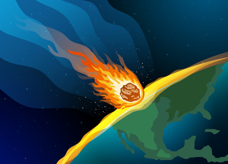
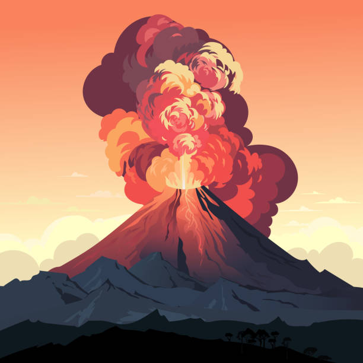

Les Causes de l'Extinction

Simulation d'impact
Impact d'Astéroïde
Il y a 66 millions d'années, un astéroïde de 10 km de diamètre a frappé la Terre à Chicxulub (Mexique actuel) à une vitesse de 20 km/s (72,000 km/h).
Saviez-vous ? La couche géologique de cette période contient des taux anormalement élevés d'iridium, un élément rare sur Terre mais commun dans les astéroïdes.
Détails scientifiques :
Données clés
- Diamètre : 10 km
- Vitesse : 20 km/s
- Énergie : 100 tératonnes TNT
Localisation
Cratère de Chicxulub, péninsule du Yucatán (Mexique)
Conséquences :
- Ondes de choc destructrices
- Tsunamis géants (1000m de haut)
- Nuage de poussière bloquant le soleil pendant des années
- Chute des températures (-20°C)
- Incendies mondiaux
Ondes de choc
Équivalent à 10 milliards de bombes atomiques
Tsunamis
Vagues de 1000m de haut
Hiver nucléaire
-20°C pendant des années

Trapps du Deccan
Activité Volcanique
Les trapps du Deccan en Inde ont connu des éruptions massives sur des milliers d'années, coïncidant avec l'extinction.
Saviez-vous ? Les petits mammifères ont mieux survécu à l'extinction car ils pouvaient se cacher et se nourrir de peu de ressources.
Détails scientifiques :
Données clés
- Durée : 30,000 ans
- Surface : 500,000 km²
- Lave émise : 1 million km³
Localisation
Plateau du Deccan, Inde occidentale
Conséquences :
- Émission de gaz toxiques (SO₂, CO₂)
- Acidification des océans (pH 7.8 → 7.3)
- Changement climatique (+2°C puis -5°C)
- Modification des écosystèmes
- Appauvrissement de la couche d'ozone
Le savais-tu ? Certains scientifiques pensent que les deux causes ont pu agir ensemble !
Comparaison des Théories
| Critère | Astéroïde | Volcans |
|---|---|---|
| Durée | Quelques années | Des milliers d'années |
| Impact climatique | Refroidissement brutal (-20°C) | Réchauffement (+2°C) puis refroidissement (-5°C) |
| Preuves | Cratère de Chicxulub, iridium | Couches de basalte en Inde |
| Effet sur la vie | Extinction immédiate | Stress écologique prolongé |